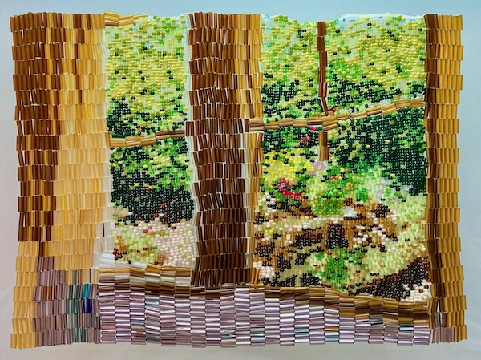
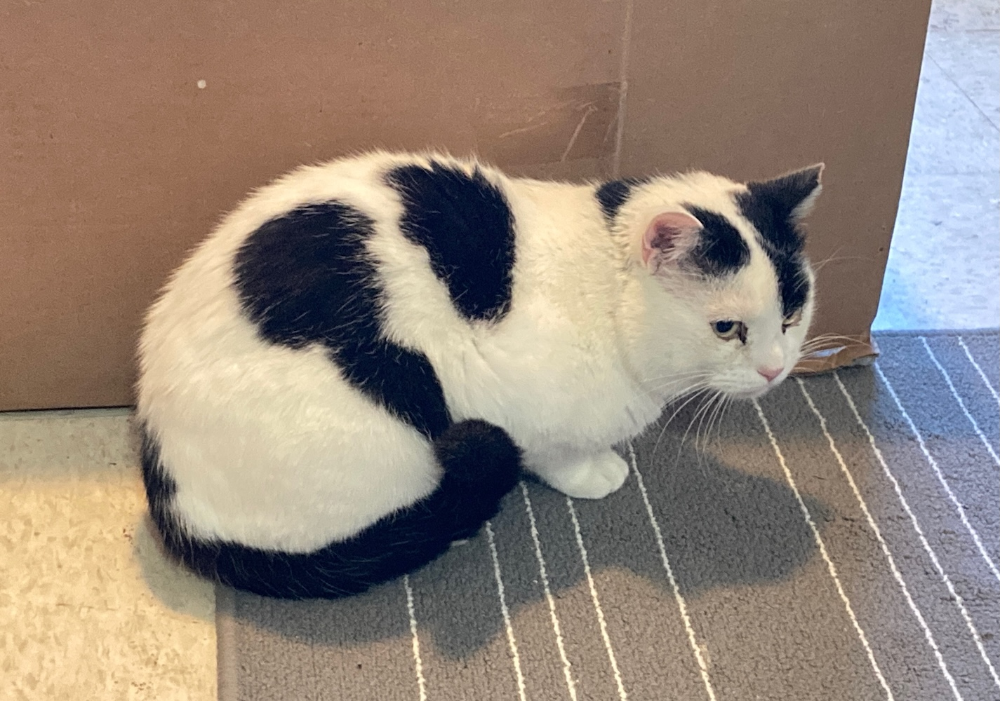
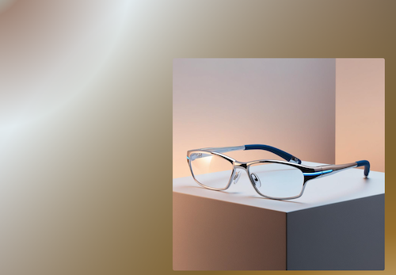
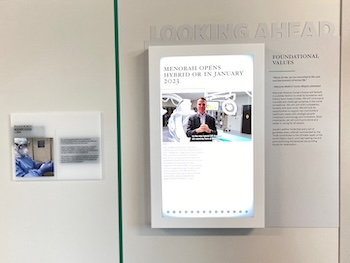

<!doctype html>
<html lang="en">
  <head>
    <meta charset="UTF-8" />
    <meta name="viewport" content="width=device-width, initial-scale=1.0" />
    <title>Jessica Kincaid</title>
  </head>
  <body>
    <div id="root"></div>
    <script type="module" src="/src/main.jsx"></script>
  </body>
</html>
<head>
  <link href="https://fonts.googleapis.com/css2?family=Roboto:wght@400;500;700&display=swap" rel="stylesheet">
  <link rel="icon" href="favicon.ico" />
  <script type="importmap">
    {
      "imports": {
        "@material/web/": "https://esm.run/@material/web/"
      }
    }
  </script>
  <script type="module">
    import '@material/web/all.js';
    import {styles as typescaleStyles} from '@material/web/typography/md-typescale-styles.js';

    document.adoptedStyleSheets.push(typescaleStyles.styleSheet);
  </script>
</head>
<body>
  <header>
    <h1 class="md-typescale-display-large">Jessica Kincaid</h1>
    <h2 class="md-typescale-display-medium">creative projects</h2>
  </header>

<main>
  <div class="md-typescale-body-medium">
    <article class="skill-row">
      <p class="md-typescale-body-large">Fine Art</p>
          
              <p class="md-typescale-body-small">I create meticulously detailed textiles with tiny glass beads. Visit my art studio to see more!</p>
  
          <a href="https://j-kincaid.github.io/Open_studio/"><md-filled-tonal-button>open studio</md-filled-tonal-button></a>
          </article>
    <article class="skill-row">
    <p class="md-typescale-body-large">kitten saga</p>
    
    <p class="md-typescale-body-small"></p>Kitten Saga is a nonlinear story about the adventures of a cat from kitten to adulthood. I created it with an open-source software called Twine. Play the role of a kitten as you grow and experience the life of a domestic cat. Will your tale have a happy ending?</p>
    <a href="./KittenSaga.html"><md-filled-tonal-button>take the journey</md-elevated-button></a>
  </article>

  <article class="skill-row">


    <p class="md-typescale-body-large">MneMonocle, an AR device for Seniors</p>
    
    <p class="md-typescale-body-small">The MneMonocle is an imaginary wearable device designed for seniors. Through augmented reality the wearer can access heightened sensory experiences and recall information pertintent to their daily lives.</p>
    
    <a href="https://j-kincaid.github.io/emerging-tech/"><md-filled-tonal-button>Ficticious Promotion</md-filled-tonal-button></a>
  </article>
  <article class="skill-row">
    <p class="md-typescale-body-large">Developer Internship, Dimensional Innovations, Summer 2023</p>
    
    <p class="md-typescale-body-small">During the internship I collaborated with the Development, Design and Product teams to create a front end application for non-touch screens in Vue and Electron. The application features an image slider and API requests from DI's custom-built CMS. Two large screens display separate slideshows, permanently on view in Menorah Medical Center's Legacy Hall.</p>
  </article>
    </div>
  </main>

  <footer></footer>
  <style>
    div {
      display: flex;
      /* flex-direction: column; */
      flex-wrap: wrap;
      /* align-items: flex-start; */
      gap: 16px;
    }

  article.skill-row {
  flex: 400px;
  margin-right: 6vw;
}
  </style>
</body>